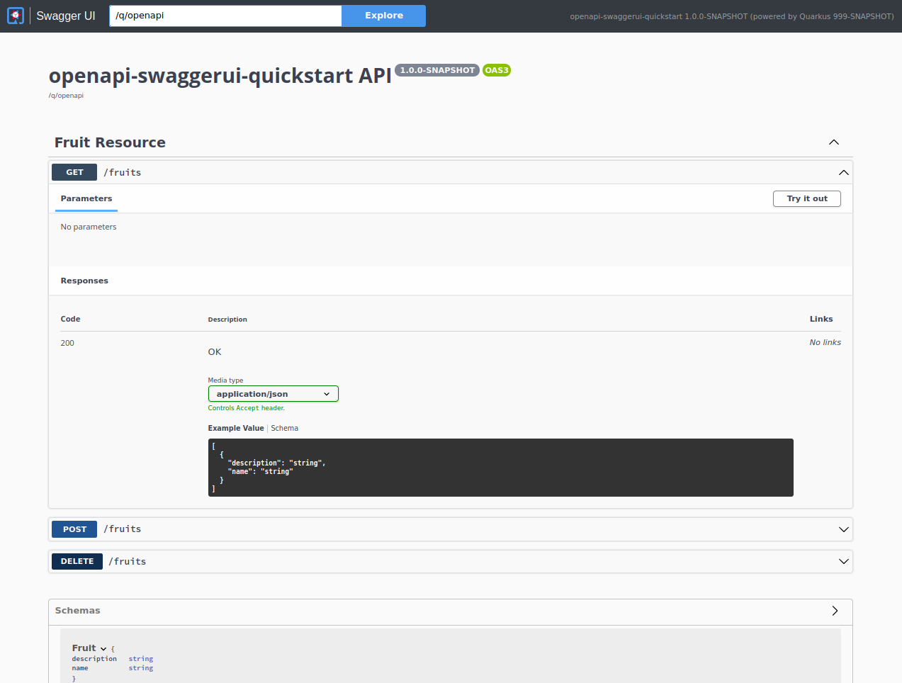
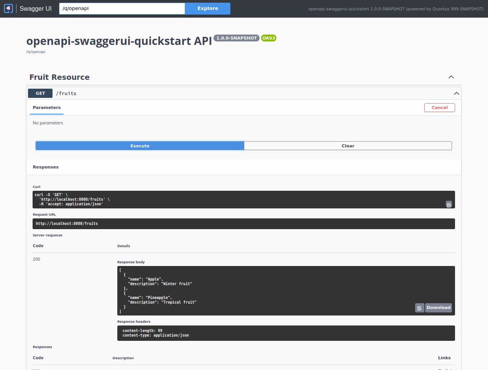

OpenAPIとSwagger UIの利用
このガイドでは、QuarkusアプリケーションがOpenAPI仕様でAPIの説明を公開する方法と、Swagger UIというユーザーフレンドリーなUIを介してテストする方法について説明します。
前提条件
このガイドを完成させるには、以下が必要です:
-
約15分
-
IDE
-
JDK 17+がインストールされ、
JAVA_HOMEが適切に設定されていること -
Apache Maven 3.9.9
-
使用したい場合は、 Quarkus CLI
-
ネイティブ実行可能ファイルをビルドしたい場合、MandrelまたはGraalVM（あるいはネイティブなコンテナビルドを使用する場合はDocker）をインストールし、 適切に設定していること
ソリューション
次の章で紹介する手順に沿って、ステップを踏んでアプリを作成することをお勧めします。ただし、すぐに完成した例に飛んでも構いません。
Gitレポジトリをクローンするか git clone -b 3.20 https://github.com/quarkusio/quarkus-quickstarts.git 、 アーカイブ をダウンロードします。
ソリューションは openapi-swaggerui-quickstart ディレクトリ にあります。
Mavenプロジェクトの作成
まず、新しいプロジェクトが必要です。以下のコマンドで新規プロジェクトを作成します。
Windowsユーザーの場合:
-
cmdを使用する場合、（バックスラッシュ
\を使用せず、すべてを同じ行に書かないでください）。 -
Powershellを使用する場合は、
-Dパラメータを二重引用符で囲んでください。例:"-DprojectArtifactId=openapi-swaggerui-quickstart"
RESTリソースを公開する
ここでは、 Fruit Beanと FruitResouce RESTリソースを作成します（QuarkusでREST APIを構築する方法について詳しく知りたい場合は、 Writing JSON REST servicesガイドを参照してください）。
package org.acme.openapi.swaggerui;
public class Fruit {
public String name;
public String description;
public Fruit() {
}
public Fruit(String name, String description) {
this.name = name;
this.description = description;
}
}package org.acme.openapi.swaggerui;
import jakarta.ws.rs.GET;
import jakarta.ws.rs.POST;
import jakarta.ws.rs.DELETE;
import jakarta.ws.rs.Path;
import java.util.Collections;
import java.util.LinkedHashMap;
import java.util.Set;
@Path("/fruits")
public class FruitResource {
private Set<Fruit> fruits = Collections.newSetFromMap(Collections.synchronizedMap(new LinkedHashMap<>()));
public FruitResource() {
fruits.add(new Fruit("Apple", "Winter fruit"));
fruits.add(new Fruit("Pineapple", "Tropical fruit"));
}
@GET
public Set<Fruit> list() {
return fruits;
}
@POST
public Set<Fruit> add(Fruit fruit) {
fruits.add(fruit);
return fruits;
}
@DELETE
public Set<Fruit> delete(Fruit fruit) {
fruits.removeIf(existingFruit -> existingFruit.name.contentEquals(fruit.name));
return fruits;
}
}テストを作成することもできます。
package org.acme.openapi.swaggerui;
import io.quarkus.test.junit.QuarkusTest;
import org.junit.jupiter.api.Test;
import jakarta.ws.rs.core.MediaType;
import static io.restassured.RestAssured.given;
import static org.hamcrest.CoreMatchers.is;
import static org.hamcrest.Matchers.containsInAnyOrder;
@QuarkusTest
public class FruitResourceTest {
@Test
public void testList() {
given()
.when().get("/fruits")
.then()
.statusCode(200)
.body("$.size()", is(2),
"name", containsInAnyOrder("Apple", "Pineapple"),
"description", containsInAnyOrder("Winter fruit", "Tropical fruit"));
}
@Test
public void testAdd() {
given()
.body("{\"name\": \"Pear\", \"description\": \"Winter fruit\"}")
.header("Content-Type", MediaType.APPLICATION_JSON)
.when()
.post("/fruits")
.then()
.statusCode(200)
.body("$.size()", is(3),
"name", containsInAnyOrder("Apple", "Pineapple", "Pear"),
"description", containsInAnyOrder("Winter fruit", "Tropical fruit", "Winter fruit"));
given()
.body("{\"name\": \"Pear\", \"description\": \"Winter fruit\"}")
.header("Content-Type", MediaType.APPLICATION_JSON)
.when()
.delete("/fruits")
.then()
.statusCode(200)
.body("$.size()", is(2),
"name", containsInAnyOrder("Apple", "Pineapple"),
"description", containsInAnyOrder("Winter fruit", "Tropical fruit"));
}
}OpenAPI仕様を公開
Quarkus では、API の OpenAPI v3 仕様 を生成するために、https://github.com/eclipse/microprofile-open-api/[MicroProfile OpenAPI] 仕様に準拠した SmallRye OpenAPI エクステンションを提供しています。
Quarkusアプリケーションに openapi のエクステンションを追加するだけです。
quarkus extension add quarkus-smallrye-openapi./mvnw quarkus:add-extension -Dextensions='quarkus-smallrye-openapi'./gradlew addExtension --extensions='quarkus-smallrye-openapi'これにより、 pom.xml に以下が追加されます:
<dependency>
<groupId>io.quarkus</groupId>
<artifactId>quarkus-smallrye-openapi</artifactId>
</dependency>implementation("io.quarkus:quarkus-smallrye-openapi")これで、アプリケーションを実行する準備が整いました。
quarkus dev./mvnw quarkus:dev./gradlew --console=plain quarkusDevアプリケーションを起動すると、デフォルトの /q/openapi エンドポイントにリクエストを行うことができます。
$ curl http://localhost:8080/q/openapi
openapi: 3.1.0
info:
title: Generated API
version: "1.0"
paths:
/fruits:
get:
responses:
200:
description: OK
content:
application/json: {}
post:
requestBody:
content:
application/json:
schema:
$ref: '#/components/schemas/Fruit'
responses:
200:
description: OK
content:
application/json: {}
delete:
requestBody:
content:
application/json:
schema:
$ref: '#/components/schemas/Fruit'
responses:
200:
description: OK
content:
application/json: {}
components:
schemas:
Fruit:
properties:
description:
type: string
name:
type: string|
あなたがデフォルトのエンドポイントの場所 |
|
OpenAPIをJSON形式でリクエストするには、 |
CTRL+C を叩いてアプリケーションを停止させます。
アプリケーションレベルのOpenAPIアノテーションの提供
以下のようなグローバルAPI情報を記述するMicroProfile OpenAPIアノテーションがあります。
-
APIタイトル
-
APIの説明
-
バージョン
-
連絡先情報
-
ライセンス
Jakarta REST Application クラスで適切な OpenAPI アノテーションを使用することで、これらの情報（や、それ以上）をすべて Java コードに含めることができます。Jakarta REST Application クラスは Quarkus では必須ではないため、作成する必要がある場合があります。このクラスは、 jakarta.ws.rs.core.Application を拡張した空のクラスとすることができます。この空のクラスには、 @OpenAPIDefinition などのさまざまな OpenAPI アノテーションを付けることができます。例えば、次のようになります:
@OpenAPIDefinition(
tags = {
@Tag(name="widget", description="Widget operations."),
@Tag(name="gasket", description="Operations related to gaskets")
},
info = @Info(
title="Example API",
version = "1.0.1",
contact = @Contact(
name = "Example API Support",
url = "http://exampleurl.com/contact",
email = "techsupport@example.com"),
license = @License(
name = "Apache 2.0",
url = "https://www.apache.org/licenses/LICENSE-2.0.html"))
)
public class ExampleApiApplication extends Application {
}SmallRyeが提供する機能で、仕様には含まれていませんが、このグローバルAPI情報を追加するために、設定を使用するという方法もあります。この方法では、jakarta REST Application クラスを用意する必要がなく、環境ごとに異なるAPI名を付けることができます。
例えば、次を application.properties に追加して下さい。
quarkus.smallrye-openapi.info-title=Example API
%dev.quarkus.smallrye-openapi.info-title=Example API (development)
%test.quarkus.smallrye-openapi.info-title=Example API (test)
quarkus.smallrye-openapi.info-version=1.0.1
quarkus.smallrye-openapi.info-description=Just an example service
quarkus.smallrye-openapi.info-terms-of-service=Your terms here
quarkus.smallrye-openapi.info-contact-email=techsupport@example.com
quarkus.smallrye-openapi.info-contact-name=Example API Support
quarkus.smallrye-openapi.info-contact-url=http://exampleurl.com/contact
quarkus.smallrye-openapi.info-license-name=Apache 2.0
quarkus.smallrye-openapi.info-license-url=https://www.apache.org/licenses/LICENSE-2.0.htmlこれにより、上記の @OpenAPIDefinition の例と同様の情報が得られます。
フィルターによる OpenAPI スキーマの強化
生成された OpenAPI スキーマは、1 つ以上のフィルターを使用して変更できます。フィルターは、ビルド時または実行時に実行できます。
/**
* Filter to add custom elements
*/
@OpenApiFilter(OpenApiFilter.RunStage.BUILD) (1)
public class MyBuildTimeFilter implements OASFilter { (2)
private IndexView view;
public MyBuildTimeFilter(IndexView view) { (3)
this.view = view;
}
@Override
public void filterOpenAPI(OpenAPI openAPI) { (4)
Collection<ClassInfo> knownClasses = this.view.getKnownClasses();
Info info = OASFactory.createInfo();
info.setDescription("Created from Annotated Buildtime filter with " + knownClasses.size() + " known indexed classes");
openAPI.setInfo(info);
}
}| 1 | メソッドに @OpenApiFilter と実行ステージ (BUILD、RUN、BOTH) でアノテーションを付けます。 |
| 2 | OASFilter を実装し、いずれかのメソッドをオーバーライドします。 |
| 3 | ビルドステージフィルターの場合、インデックスを渡すことができます (オプション)。 |
| 4 | 生成された OpenAPI スキーマを取得し、必要に応じて強化します。 |
スキーマのフィールドを設定すると、生成された内容がオーバーライドされることに注意してください。場合によっては、この内容を取得して追加 (つまり変更) する必要があります。また、生成された値が null になる可能性があるため、その点を確認する必要があります。
静的ファイルからの OpenAPI スキーマのロード
Quarkusでは、アノテーションスキャンからOpenAPIスキーマを動的に作成する代わりに、静的なOpenAPIドキュメントの配信もサポートしています。サーブする静的ファイルは、 OpenAPI仕様 に準拠した有効なドキュメントである必要があります。OpenAPI仕様に準拠したOpenAPIドキュメントは、それ自体が有効なJSONオブジェクトであり、 yaml または json 形式で表現できます。
この動作を確認するために、/fruits のエンドポイントについて、OpenAPI ドキュメントを META-INF/openapi.yaml の下に置いてみます。希望に応じて、Quarkus は OpenAPI document paths もサポートしています。
openapi: 3.1.0
info:
title: Static OpenAPI document of fruits resource
description: Fruit resources Open API documentation
version: "1.0"
servers:
- url: http://localhost:8080/q/openapi
description: Optional dev mode server description
paths:
/fruits:
get:
responses:
200:
description: OK - fruits list
content:
application/json: {}
post:
requestBody:
content:
application/json:
schema:
$ref: '#/components/schemas/Fruit'
responses:
200:
description: new fruit resource created
content:
application/json: {}
delete:
requestBody:
content:
application/json:
schema:
$ref: '#/components/schemas/Fruit'
responses:
200:
description: OK - fruit resource deleted
content:
application/json: {}
components:
schemas:
Fruit:
properties:
description:
type: string
name:
type: stringデフォルトでは、 /q/openapi へのリクエストは、静的ファイルとアプリケーション エンドポイント コードから生成されたモデルを組み合わせた OpenAPI ドキュメントを提供します。しかし、 application.properties に mp.openapi.scan.disable=true 設定を追加することで、静的な OpenAPI ドキュメントのみを提供するように変更することができます。
これで、 /q/openapi エンドポイントへのリクエストは、生成されたものではなく静的な OpenAPI ドキュメントを提供するようになりました。
|
OpenAPIドキュメントパスについて
Quarkusは、OpenAPIドキュメントを保存するためのさまざまなパスをサポートしています。
開発中は、静的なOpenAPIドキュメントのライブリロードがサポートされています。OpenAPIドキュメントへの変更は、Quarkusによって起動中にピックアップされます。 |
OpenAPIのバージョン変更
デフォルトでは、ドキュメント生成時に使用される OpenAPI のバージョンは 3.1.0 です。上記のように静的ファイルを使用する場合は、そのファイルのバージョンが使用されます。また、以下の設定で SmallRye でバージョンを定義することもできます。
mp.openapi.extensions.smallrye.openapi=3.0.4これは、あなたのAPIが特定のバージョンを必要とするゲートウェイを経由する場合に便利です。
|
OpenAPI バージョンを |
操作IDの自動生成
Operation Idは @Operation アノテーションを使って設定することができ、ツールを使ってスキーマからクライアント・スタブを生成する際に多くの場合役立ちます。Operation Idは通常、クライアントスタブのメソッド名に使用されます。SmallRyeでは、以下のような設定でこのOperation Idを自動生成することができます。
mp.openapi.extensions.smallrye.operationIdStrategy=METHODこれで、 @Operation アノテーションを使用する必要はありません。ドキュメントの生成時には、メソッド名がオペレーションIDとして使用されます。
| プロパティ値 | 説明 |
|---|---|
|
メソッド名を使用します。 |
|
(パッケージを含まない)クラス名とメソッドを使用します。 |
|
クラス名とメソッド名を使用します。 |
開発にSwagger UIを使用する
APIを構築する際、開発者は素早くテストしたいと考えています。 Swagger UI は、APIを視覚化して対話するための素晴らしいツールです。UIはOpenAPI仕様から自動的に生成されます。
Quarkus smallrye-openapi エクステンションには、適切に設定されたSwagger UIページを埋め込む swagger-ui エクステンションが付属しています。
|
デフォルトでは、Swagger UIは、Quarkusをdevモードまたはtestモードで起動したときにのみ使用できます。 本番環境でも利用できるようにしたい場合は、以下の設定を これはビルド時プロパティーで、アプリケーションがビルドされた後、ランタイムに変更することはできません。 |
デフォルトでは、Swagger UIは /q/swagger-ui でアクセス可能です。
application.properties の quarkus.swagger-ui.path プロパティーを設定することで、 /swagger-ui サブパスを更新することができます。
quarkus.swagger-ui.path=my-custom-path|
値 |
これで、アプリケーションを実行する準備が整いました。
./mvnw quarkus:devアプリケーションのログでSwaggerのUIパスを確認することができます。
00:00:00,000 INFO [io.qua.swa.run.SwaggerUiServletExtension] Swagger UI available at /q/swagger-uiアプリケーションが起動したら、 http://localhost:8080/q/swagger-ui にアクセスしてAPIで遊ぶことができます。
APIの操作やスキーマを可視化することができます。 
また、APIを素早くテストするためにAPIと対話することもできます。 
CTRL+C を叩いてアプリケーションを停止させます。
スタイリング
独自のロゴやCSSを供給することで、swagger uiをスタイリングすることができます。
ロゴマーク
独自のロゴを提供するには、 logo.png というファイルを src/main/resources/META-INF/branding に配置する必要があります。
これにより、（swagger uiだけでなく）すべてのUIのロゴが設定されるので、ここではGraphQL-UIやHealth-UI（含まれている場合）も設定されます。
このロゴをswagger-uiだけに適用したい（すべてのUIにグローバルに適用したくない）場合は、 logo.png ではなく smallrye-open-api-ui.png というファイルを呼び出します。
CSS
HTMLのスタイルをオーバーライド/強化する独自のCSSを提供するには、 src/main/resources/META-INF/branding の中に style.css というファイルを置く必要があります。
これにより、（swagger uiだけでなく）すべてのUIにそのCSSが追加されます。この場合、（含まれていれば）GraphQL-UIやHealth-UIにも追加されます。
このスタイルをswagger-uiだけに適用したい（すべてのUIにグローバルに適用したくない）場合は、 style.css ではなく smallrye-open-api-ui.css というファイルを呼び出します。
スタイリングの詳細については、このブログのエントリーをお読みください https://quarkus.io/blog/stylish-api/
クロスオリジンリソース共有
別のドメインで実行されているシングルページのアプリケーションからこのアプリケーションを利用する場合は、CORS (クロスオリジンリソース共有) を設定する必要があります。 詳細は、「クロスオリジンリソース共有」ガイドの CORS フィルター セクションを参照してください。
設定リファレンス
MicroProfile OpenAPI
MicroProfile OpenAPI Core 設定は、https://download.eclipse.org/microprofile/microprofile-open-api-3.1.1/microprofile-openapi-spec-3.1.1.html#_core_configurations[MicroProfile OpenAPI 仕様] で定義されています。 MicroProfile OpenAPI アノテーションの詳細は、https://download.eclipse.org/microprofile/microprofile-open-api-3.1.1/apidocs/org/eclipse/microprofile/openapi/annotations/package-summary.html[MicroProfile OpenAPI API Javadoc] を参照してください。
OpenAPI
ビルド時に固定される設定プロパティ - 他のすべての設定プロパティは実行時にオーバーライド可能
Configuration property |
タイプ |
デフォルト |
|---|---|---|
The path at which to register the OpenAPI Servlet. Environment variable: Show more |
string |
|
If set, the generated OpenAPI schema documents will be stored here on build. Both openapi.json and openapi.yaml will be stored here if this is set. Environment variable: Show more |
path |
|
The name of the file in case it is being stored. Environment variable: Show more |
string |
|
Do not run the filter only at startup, but every time the document is requested (dynamic). Environment variable: Show more |
boolean |
|
Do not include the provided static openapi document (eg. META-INF/openapi.yaml) Environment variable: Show more |
boolean |
|
If management interface is turned on the openapi schema document will be published under the management interface. This allows you to exclude OpenAPI from management by setting the value to false Environment variable: Show more |
boolean |
|
A list of local directories that should be scanned for yaml and/or json files to be included in the static model. Example: Environment variable: Show more |
list of path |
|
Add a certain SecurityScheme with config Environment variable: Show more |
|
|
Add a Security Scheme name to the generated OpenAPI document Environment variable: Show more |
string |
|
Add a description to the Security Scheme Environment variable: Show more |
string |
|
Add one or more extensions to the security scheme Environment variable: Show more |
Map<String,String> |
|
This will automatically add the security requirement to all methods/classes that has a Environment variable: Show more |
boolean |
|
This will automatically add tags to operations based on the Java class name. Environment variable: Show more |
boolean |
|
This will automatically add Bad Request (400 HTTP response) API response to operations with an input. Environment variable: Show more |
boolean |
|
This will automatically add a summary to operations based on the Java method name. Environment variable: Show more |
boolean |
|
Setting it to Environment variable: Show more |
boolean |
|
This will automatically add security based on the security extension included (if any). Environment variable: Show more |
boolean |
|
Required when using Environment variable: Show more |
string |
|
Required when using Environment variable: Show more |
string |
|
Add a scheme value to the Basic HTTP Security Scheme Environment variable: Show more |
string |
|
Add a scheme value to the JWT Security Scheme Environment variable: Show more |
string |
|
Add a bearer format the JWT Security Scheme Environment variable: Show more |
string |
|
Add a scheme value to the OAuth2 opaque token Security Scheme Environment variable: Show more |
string |
|
Add a scheme value to OAuth2 opaque token Security Scheme Environment variable: Show more |
string |
|
Add a openIdConnectUrl value to the OIDC Security Scheme Environment variable: Show more |
string |
|
Add a implicit flow refreshUrl value to the OAuth2 Security Scheme Environment variable: Show more |
string |
|
Add an implicit flow authorizationUrl value to the OAuth2 Security Scheme Environment variable: Show more |
string |
|
Add an implicit flow tokenUrl value to the OAuth2 Security Scheme Environment variable: Show more |
string |
|
Override the openapi version in the Schema document Environment variable: Show more |
string |
|
Set the title in Info tag in the Schema document Environment variable: Show more |
string |
|
Set the version in Info tag in the Schema document Environment variable: Show more |
string |
|
Set the description in Info tag in the Schema document Environment variable: Show more |
string |
|
Set the terms of the service in Info tag in the Schema document Environment variable: Show more |
string |
|
Set the contact email in Info tag in the Schema document Environment variable: Show more |
string |
|
Set the contact name in Info tag in the Schema document Environment variable: Show more |
string |
|
Set the contact url in Info tag in the Schema document Environment variable: Show more |
string |
|
Set the license name in Info tag in the Schema document Environment variable: Show more |
string |
|
Set the license url in Info tag in the Schema document Environment variable: Show more |
string |
|
Set the strategy to automatically create an operation Id Environment variable: Show more |
|
|
Enable the openapi endpoint. By default it’s enabled. Environment variable: Show more |
boolean |
|
Specify the list of global servers that provide connectivity information Environment variable: Show more |
list of string |
Swagger UI
ビルド時に固定される設定プロパティ - 他のすべての設定プロパティは、実行時にオーバーライド可能
Configuration property |
タイプ |
デフォルト |
|---|---|---|
The path where Swagger UI is available. The value Environment variable: Show more |
string |
|
If this should be included every time. By default, this is only included when the application is running in dev mode. Environment variable: Show more |
boolean |
|
The urls that will be included as options. By default, the OpenAPI path will be used. Here you can override that and supply multiple urls that will appear in the TopBar plugin. Environment variable: Show more |
Map<String,String> |
|
If urls option is used, this will be the name of the default selection. Environment variable: Show more |
string |
|
The html title for the page. Environment variable: Show more |
string |
|
Swagger UI theme to be used. Environment variable: Show more |
|
|
A footer for the html page. Nothing by default. Environment variable: Show more |
string |
|
If set to true, enables deep linking for tags and operations. Environment variable: Show more |
boolean |
|
Controls the display of operationId in operations list. The default is false. Environment variable: Show more |
boolean |
|
The default expansion depth for models (set to -1 completely hide the models). Environment variable: Show more |
int |
|
The default expansion depth for the model on the model-example section. Environment variable: Show more |
int |
|
Controls how the model is shown when the API is first rendered. Environment variable: Show more |
string |
|
Controls the display of the request duration (in milliseconds) for "Try it out" requests. Environment variable: Show more |
boolean |
|
Controls the default expansion setting for the operations and tags. Environment variable: Show more |
|
|
If set, enables filtering. The top bar will show an edit box that you can use to filter the tagged operations that are shown. Can be Boolean to enable or disable, or a string, in which case filtering will be enabled using that string as the filter expression. Filtering is case-sensitive matching the filter expression anywhere inside the tag. Environment variable: Show more |
string |
|
If set, limits the number of tagged operations displayed to at most this many. The default is to show all operations. Environment variable: Show more |
int |
|
Apply a sort to the operation list of each API. It can be 'alpha' (sort by paths alphanumerically), 'method' (sort by HTTP method) or a function (see Array.prototype.sort() to know how sort function works). Default is the order returned by the server unchanged. Environment variable: Show more |
string |
|
Controls the display of vendor extension (x-) fields and values for Operations, Parameters, and Schema. Environment variable: Show more |
boolean |
|
Controls the display of extensions (pattern, maxLength, minLength, maximum, minimum) fields and values for Parameters. Environment variable: Show more |
boolean |
|
Apply a sort to the tag list of each API. It can be 'alpha' (sort by paths alphanumerically) or a function (see Array.prototype.sort() to learn how to write a sort function). Two tag name strings are passed to the sorter for each pass. Default is the order determined by Swagger UI. Environment variable: Show more |
string |
|
Provides a mechanism to be notified when Swagger UI has finished rendering a newly provided definition. Environment variable: Show more |
string |
|
Set to Environment variable: Show more |
string |
|
OAuth redirect URL. Environment variable: Show more |
string |
|
MUST be a function. Function to intercept remote definition, "Try it out", and OAuth 2.0 requests. Accepts one argument requestInterceptor(request) and must return the modified request, or a Promise that resolves to the modified request. Environment variable: Show more |
string |
|
If set, MUST be an array of command line options available to the curl command. This can be set on the mutated request in the requestInterceptor function. Environment variable: Show more |
list of string |
|
MUST be a function. Function to intercept remote definition, "Try it out", and OAuth 2.0 responses. Accepts one argument responseInterceptor(response) and must return the modified response, or a Promise that resolves to the modified response. Environment variable: Show more |
string |
|
If set to true, uses the mutated request returned from a requestInterceptor to produce the curl command in the UI, otherwise the request before the requestInterceptor was applied is used. Environment variable: Show more |
boolean |
|
List of HTTP methods that have the "Try it out" feature enabled. An empty array disables "Try it out" for all operations. This does not filter the operations from the display. Environment variable: Show more |
list of |
|
By default, Swagger UI attempts to validate specs against swagger.io’s online validator. You can use this parameter to set a different validator URL, for example for locally deployed validators (Validator Badge). Setting it to either none, 127.0.0.1 or localhost will disable validation. Environment variable: Show more |
string |
|
If set to true, enables passing credentials, as defined in the Fetch standard, in CORS requests that are sent by the browser. Environment variable: Show more |
boolean |
|
Function to set default values to each property in model. Accepts one argument modelPropertyMacro(property), property is immutable Environment variable: Show more |
string |
|
Function to set default value to parameters. Accepts two arguments parameterMacro(operation, parameter). Operation and parameter are objects passed for context, both remain immutable Environment variable: Show more |
string |
|
If set to true, it persists authorization data and it would not be lost on browser close/refresh Environment variable: Show more |
boolean |
|
The name of a component available via the plugin system to use as the top-level layout for Swagger UI. Environment variable: Show more |
string |
|
A list of plugin functions to use in Swagger UI. Environment variable: Show more |
list of string |
|
A list of external scripts (usually plugins) to use in Swagger UI. Environment variable: Show more |
list of string |
|
A list of presets to use in Swagger UI. Environment variable: Show more |
list of string |
|
OAuth default clientId - Used in the initOAuth method. Environment variable: Show more |
string |
|
OAuth default clientSecret - Used in the initOAuth method. Environment variable: Show more |
string |
|
OAuth1 Realm query parameter added to authorizationUrl and tokenUrl - Used in the initOAuth method. Environment variable: Show more |
string |
|
OAuth application name, displayed in authorization popup - Used in the initOAuth method. Environment variable: Show more |
string |
|
OAuth scope separator for passing scopes - Used in the initOAuth method. Environment variable: Show more |
string |
|
OAuth Scopes, separated using the oauthScopeSeparator - Used in the initOAuth method. Environment variable: Show more |
string |
|
OAuth additional query parameters added to authorizationUrl and tokenUrl - Used in the initOAuth method. Environment variable: Show more |
string |
|
OAuth only activated for the accessCode flow. During the authorization_code request to the tokenUrl, pass the Client Password using the HTTP Basic Authentication scheme - Used in the initOAuth method. Environment variable: Show more |
boolean |
|
OAuth only applies to authorization code flows. Proof Key for Code Exchange brings enhanced security for OAuth public clients - Used in the initOAuth method. Environment variable: Show more |
boolean |
|
Pre-authorize Basic Auth, programmatically set DefinitionKey for a Basic authorization scheme - Used in the preauthorizeBasic method. Environment variable: Show more |
string |
|
Pre-authorize Basic Auth, programmatically set Username for a Basic authorization scheme - Used in the preauthorizeBasic method. Environment variable: Show more |
string |
|
Pre-authorize Basic Auth, programmatically set Password for a Basic authorization scheme - Used in the preauthorizeBasic method. Environment variable: Show more |
string |
|
Pre-authorize ApiKey Auth, programmatically set DefinitionKey for an API key or Bearer authorization scheme - Used in the preauthorizeApiKey method. Environment variable: Show more |
string |
|
Pre-authorize ApiKey Auth, programmatically set ApiKeyValue for an API key or Bearer authorization scheme - Used in the preauthorizeApiKey method. Environment variable: Show more |
string |
|
If set to true, this allows the user to modify and test different query parameters in the API request Environment variable: Show more |
boolean |
|
If try it out should be enabled by default Environment variable: Show more |
boolean |
|
If Swagger UI is included, it should be enabled/disabled. By default, Swagger UI is enabled if it is included (see Environment variable: Show more |
boolean |
|